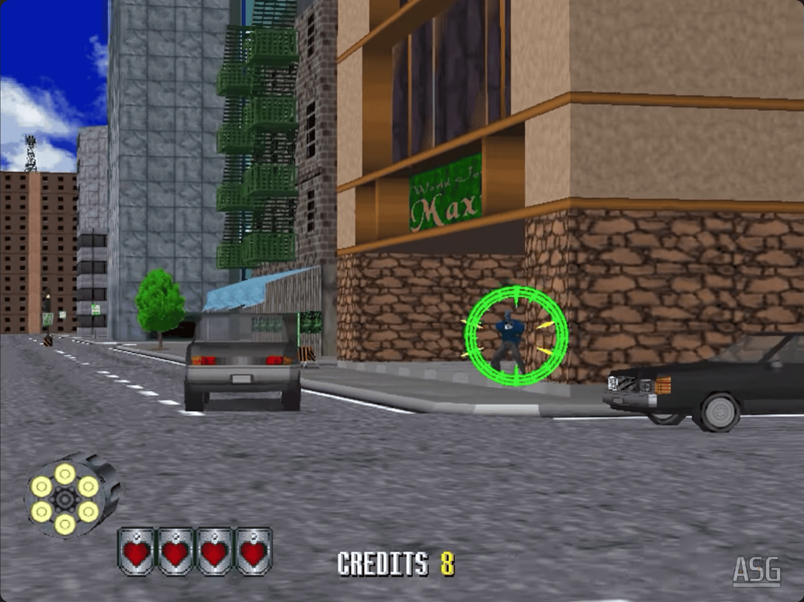
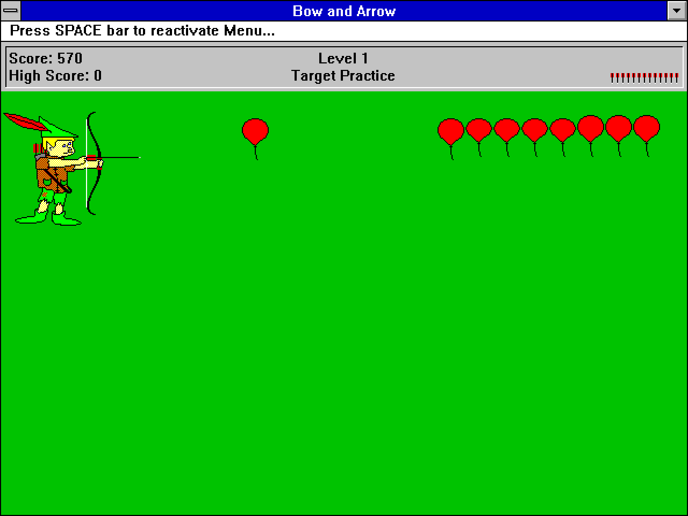
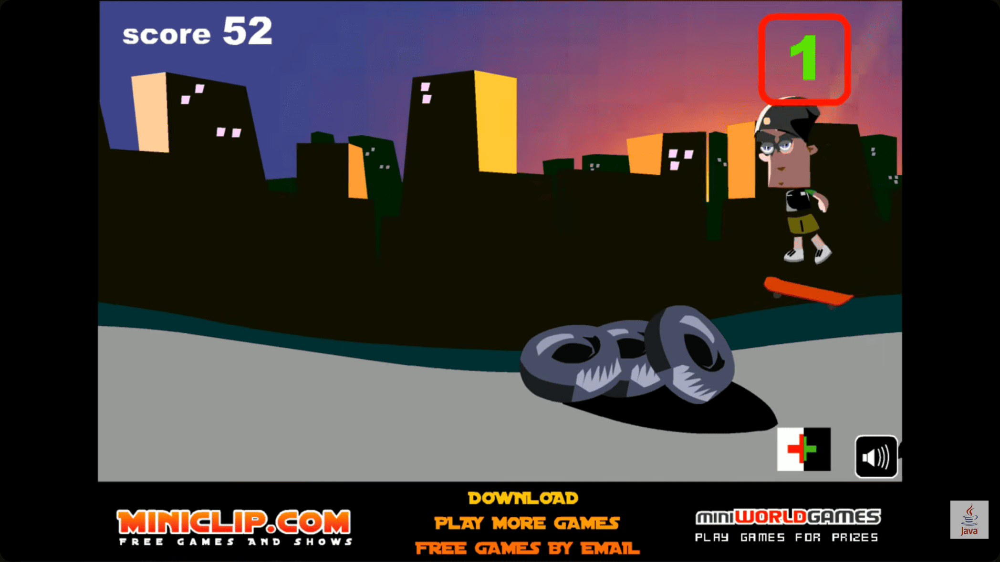
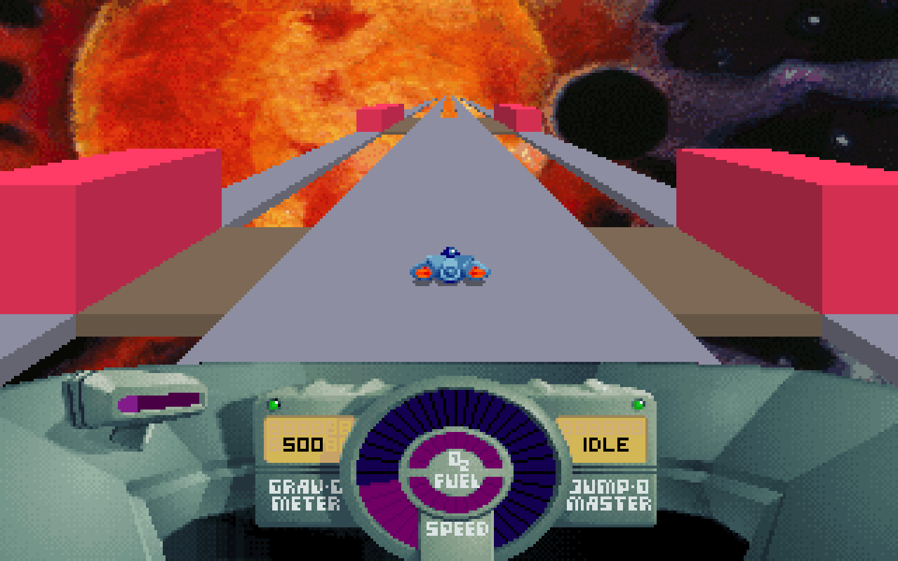
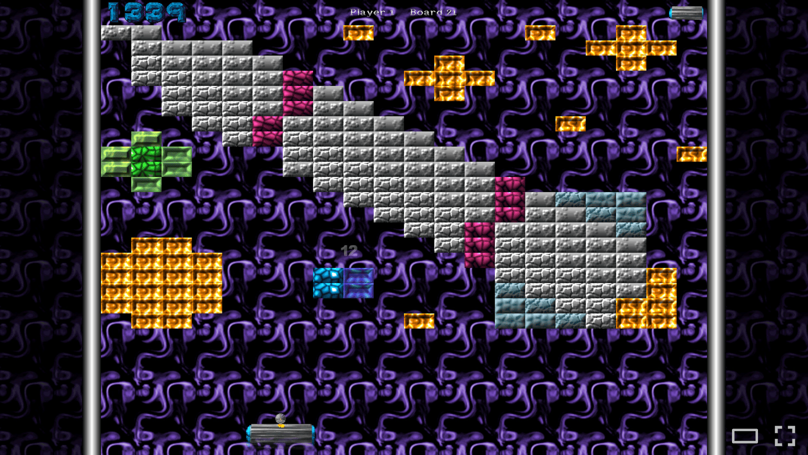
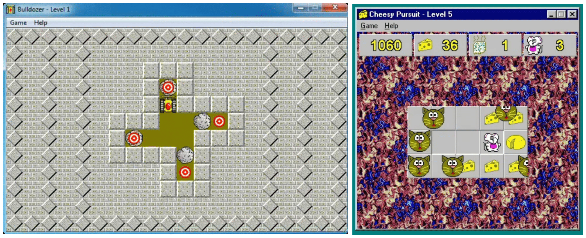

Lowood: The "Avoid missing ball for high score," the thing that was put on the cabinet plate, was that you or was that Nolan?
Alcorn: I think that was me, I think it was me. Basically it was a funny argument that we had where Nolan said before we put this out in production it has [to have instructions], because the original Pong prototype has no instructions on it at all. That was in retrospect pretty telling. I mean here you put this machine out at Andy Capp's with no instructions, a coin box, two knobs, and a TV set and it made money. I mean that's pretty impressive. But Nolan said it had to have instructions, I said nonsense. If you have to have instructions no one will play it and no one would read it. He said pinball machines have instructions. I said, "No they don't." We go in the back and look. There they are in the lower left hand corner. Like wow, I never read that, you know. So okay, in my sarcastic fashion, I picked up the three instructions: Insert quarter, ball will serve automatically, avoid missing ball for high score. Yeah I think I did that. The other thing that happened in the early days, the other thing we learned right off the back was the potentiometer to control the paddles. I just went and bought at Radio Shack or an electronic parts store, a 50 cent potentiometer. Within a week or two, it was dead. Then I did the math. I figured we knew how many coins were in the box and you'd figure there may be 20 or 30 turns of the knob for every quarter that was in there, and we did the math and like, oh my God, this thing will do a million rotations in three or four months. And so we had to go to Allen-Bradley to get a very highlight potentiometer, otherwise these things would fail all of the time. So that was kind of a happy problem.
- CHM's 2008 Oral History of Al Alcorn, where he describes the early days of Pong.
They say it's bad to be nostalgic, especially when you are young. However, exceptions can certainly be made, after all, what good is life without a little bit of fun? So today, I have decided to branch away from my usual technically-drenched blog posts, channel my inner Fabien Sanglard, and take you down a memory-trip of my favorite video games growing up.
To spice things up a bit, I have consciously decided not to focus on the universally-acclaimed games, but rather on the relatively-obscure ones. Just like most Indian kids, my childhood too was filled with countless memories from Roadrash, Cricket 07, Super Mario Bros, Wolfenstein 3D, Aladdin, and Grand Theft Auto (Vice City and San Andreas). I never enjoyed the GTA missions! For me, it was all about roaming around, getting in trouble with the cops, and trying all the cheats. My friends and I would print them out on paper and rote learn them. There were others too - Circus Charlie's American Patrol music still lives rent-free in my head! I even had an optical light gun to play Duck Hunt with.
Growing up in India in the mid 2000s, I recall that the gaming culture was quite nascent, and possibly isolated to the urban regions. We used to have "cyber cafes" back then. You could pay by the hour, and you'd be assigned a computer loaded with tons of video games on it. They were expensive though, and our family occasionally used them to chat with my Aunt via Yahoo Messenger. Interestingly, to the best of my knowledge, these cafes were how many Indians were first introduced to computers! The cafes would conduct computer classes, filled with the "medieval trinity" of MS Word/PowerPoint, Paint/WordArt, and games.
It turns out games were a great way to teach people about the mouse. Here is a 1994 article from Joel Garreau:
Microsoft originally put Solitaire into Windows to soothe people intimidated by the operating system, according to Duzan. It gave them something familiar and fun to do with their computer while it also taught them how to use a mouse. Not surprisingly, for years Solitaire was the most-used application for Windows, Microsoft officials say.
Then there was "Mitashi", an Indian electronics brand that would sell a NES look-alike along with cartridges filled with NES games! My family bought one, and besides the above mentioned games, we also had Track and Field, Popeye, and Contra.
A while later, my dad went all out and bought a computer rig - an entire sound system, flat-screen monitor (a rarity in those days), mechanical keyboard, and even a webcam! These were sourced from what was then a young electronics retailer, iBall. One evening, a professional-looking "guy" came in, stepped inside our computer station, assembled the parts for us, and then spent a long time installing all the software, including Windows XP. Funny enough, to test out the monitor and speakers, he downloaded a 5-minute clip of the mega race scene from Spy Kids 3: Game Over - Juni, push the red button! I must have watched that video a bazillion times. It was with this rig that my gaming journey really took off.
Alright, time for the obscurity, ready?

This was from Sega, and was a favorite of my dad and me. It involved chasing criminals, all the while making sure that you don't kill any civilians. There were 3 levels, each presenting a final boss. I recollect having a hard time getting through the subway station - those pesky civilians!

A deceptively simple game from John Di Troia where there's an archer dressed up as Robin Hood, whose goal is to pop balloons with greater challenges as we progress.
It was only after all this time that I found out this game was made in Flash. Claude rightly pointed out that it is authored by Ferry Halim, who published this as part of "Orisinal", which had tons of other Flash games in it. Apparently, you can still enjoy this game on his website!

Another Flash game, where Stan the skateboarder zooms around a construction zone, and our objective is to jump at the right time to prevent tipping on obstacles. This was a 2D precursor of the endless runner genre, which was later dominated by mobile games such as Temple Run.

Growing up, this is how I imagined space travel would look. Its background images were very beautifully designed, almost artistic.

A twist on Atari's Breakout. This is the one game my dad and I would fight over all the time! He was practically addicted to this and Luxor: Pharaoh's Challenge (a PSP game, from a later era).

These mini-games were developed by the same studio, The Code Zone. It turns out the studio had these Sokoban-style puzzle games that were quite popular amongst bundled discs. For Bulldozer, the motive was to use the bulldozer to push boulders onto targets without getting trapped. Cheesy Pursuit was another hair-pulling game where the mice had to eat all the cheese on the grid without being caught by the cats! A twist on Pac-Man.
There were others too - does anyone remember Dangerous Dave, The Jungle Book, or Nintendo's Tom and Jerry? I also recall playing a "punching-bag" style boxing game where you could beat a guy to a pulp. Eventually, I grew out of these to greener pastures. My dad later visited China, from where he purchased a PSP Go, which I adored for many years.